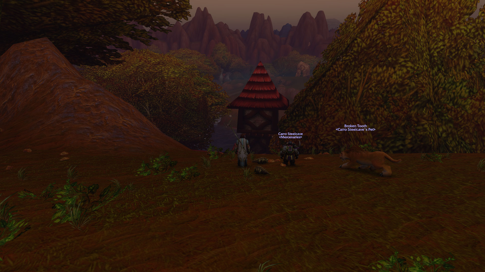
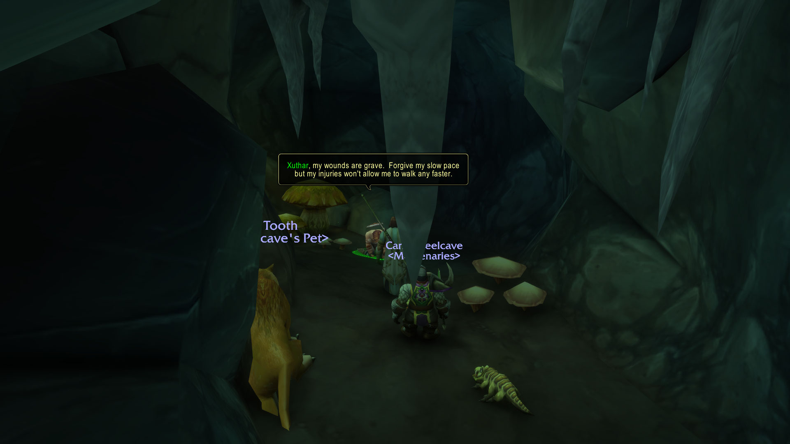
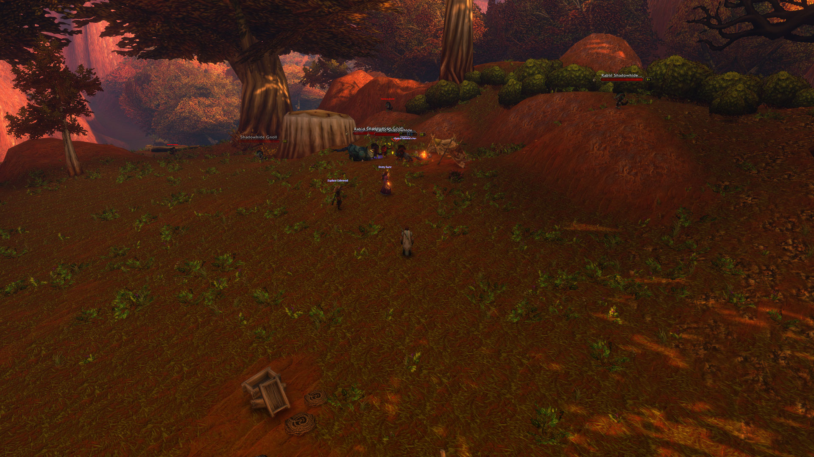
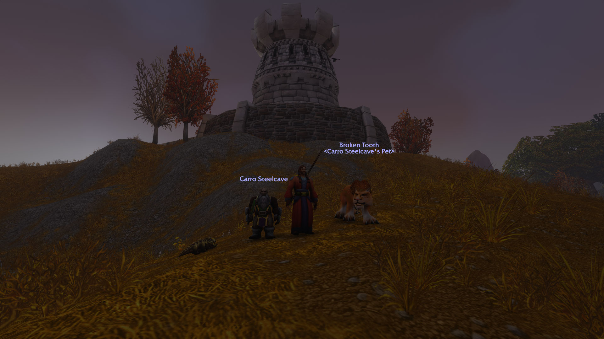
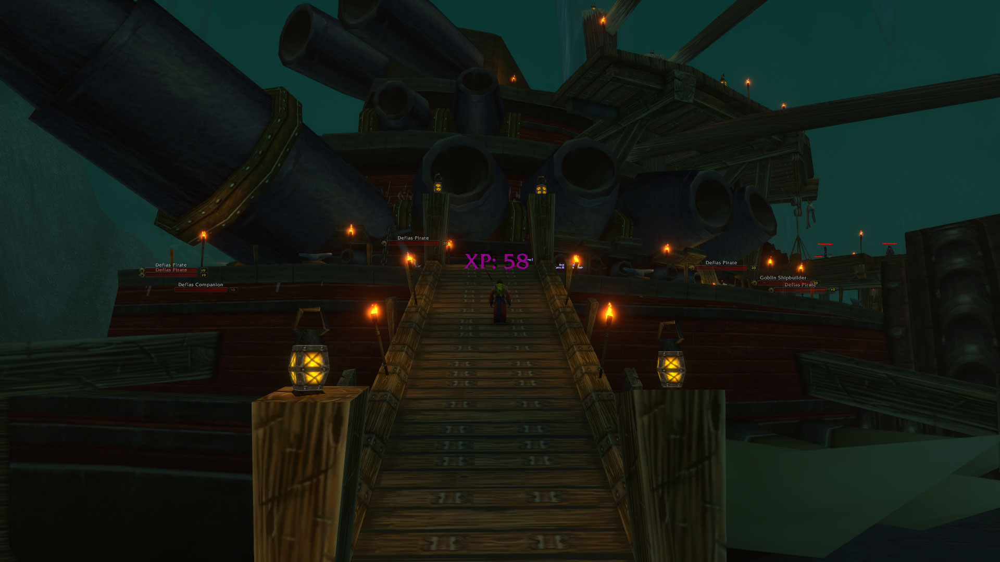
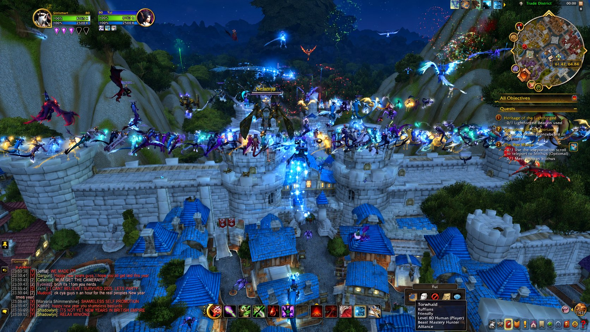

WARCRAFT DISPATCH
The next news from Azeroth is on its way.
Read the latest reports on Wowhead while the news feed loads.
Open Wowhead ↗
HONOUR TO THE HEROES / 17 NOVEMBER 2026
Gar’im. Gath’Ilzogg. Morganth. Defeated.
Nine quests answered—and a wounded soldier brought out of the dark.
01 / THE WORLD BEYOND OUR JOURNEY
WARCRAFT DISPATCH
Read the latest reports on Wowhead while the news feed loads.
Open Wowhead ↗Headlines from Wowhead · Times shown in Italy
02 / FROM THE TRAVELLER’S JOURNAL

NO ONE LEFT IN THE DARKAfter the great enemies, the most human victory: two friends refusing to leave a wounded corporal behind.
Follow Keeshan’s rescue ↗
THE REDRIDGE CAMPAIGNNew companions, the Shadowhide camps, a solitary victory over Bellygrub—and unfinished business at Stonewatch.
Explore the illustrated adventure ↗ DUNGEON VICTORY
DUNGEON VICTORYBazil Thredd falls. A long investigation leads to the Seal of Wrynn, before one final hunt beneath the city’s bridges.
The story & dungeon guide ↗
13 NOVEMBER · HONOUR TO THE HEROES
Xuthar, Carro and the road to VanCleef. The complete epic, with 26 original Full HD photographs.
 MEMORY BEFORE GLORY.
MEMORY BEFORE GLORY.
03 / A LIFE, ONE CHAPTER AT A TIME
The Book of Forgotten Names
Not every name finds its way into history. Xuthar keeps them anyway. An unfolding novel of friendship, doubt and the small acts of courage that carry a traveller onward.
Continue the living book ↗04 / BEYOND THE NEXT RIDGE




THREE TRAVELLERS · ONE WORLD
A WINDOW INTO AZEROTH
The stories, places and atmosphere that bring us back. Take a moment between adventures.